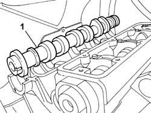

1036G22 CAMSHAFT IN RH HEAD EXTENSION - R+R WITH HEAD EXTENSION AND TIMING BELT REMOVED
- Path
- Procedures > 10 ENGINE > 1036 TIMING SYSTEM > 1036G CAMSHAFT (1) IN CAMSHAFT HOUSINGS (2) > 1036G22 CAMSHAFT IN RH HEAD EXTENSION - R+R WITH HEAD EXTENSION AND TIMING BELT REMOVED
- Kind
- repair procedure (removal / refitting; the operation number is the code)
- Applies to
- engines: 2.0 16v; all production periods
- Interactive page
- https://sloeber94.github.io/elrnDB-fUlss/en/#/179006961
Applies to: engines: 2.0 16v; all production periods
 Removing
Removing
 Refitting
Refitting- Remove the valve drive gear camshaft from the right camshaft housing.

Applies to: engines: 2.0 16v; all production periods
Refitting
Removing- Fit the valve drive gear camshaft in the right camshaft housing.